2127A70 support for control levers for manual gearbox with hydraulic selection and handbrake - r r
- Path
- Procedures > 21 GEARBOX > 2127 ELECTRO-HYDRAULIC SELECTION. GEARBOX EXTERNAL. CONTROLS > 2127A hydraulic transmission external linkage > 2127A70 support for control levers for manual gearbox with hydraulic selection and handbrake - r r
- Kind
- repair procedure (removal / refitting; the operation number is the code)
- Applies to
- engines: 2.0 TS, 3.2 V6; all production periods
- Interactive page
- https://sloeber94.github.io/elrnDB-a147/en/#/3025141
Applies to: engines: 2.0 TS; all production periods; only with equipment: Cambio robotizzato
 Removing
Removing
 Refitting
RefittingPosition the vehicle on the ramp.
Ensure that the ignition key is in the OFF postition, then disconnect the battery negative terminal.
 | Name | Connector |
|---|---|---|
- | Battery |
Proceed with the removal 2127A20 cover of control lever/handle for manual gearbox with hydraulic selection - r r .
Proceed with the removal 7040A65 passenger compartment box lock , one , r r .
1. Disconnect the electrical connection for the electro-hydraulic manual gear lever.
| Name | Connector |
|---|---|---|
1 | Gear controls |
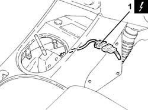
Applies to: engines: 2.0 TS; all production periods; only with equipment: Cambio robotizzato
Release the rubber protection for the electro-hydraulic selection manual gear lever.
Remove the handbrake boot.
1. Lift up the handbrake lever (1a) and loosen the nut (1b) tensioning the handbrake cables.
2. Disconnect the electrical connection from the handbrake switch.
| Name | Connector |
|---|---|---|
2 | Handbrake switch |
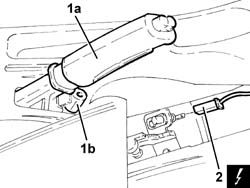
Applies to: engines: 2.0 TS; all production periods; only with equipment: Cambio robotizzato
1. Disconnect the electrical connection for the Lambda sensor.
| Name | Connector |
|---|---|---|
1 | Lambda sensor downstream of post-catalyzer |
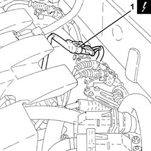
Applies to: engines: 2.0 TS; all production periods; only with equipment: Cambio robotizzato
1. Release the electrical wiring for the Lambda sensor from the fastenings on the underbody.
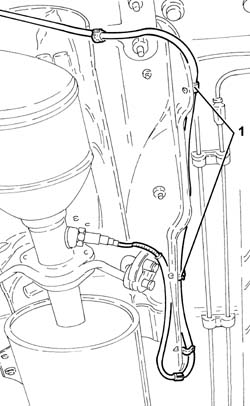
Applies to: engines: 2.0 TS; all production periods; only with equipment: Cambio robotizzato
1. Loosen the collar fixing the intermediate exhaust silencer to the rear silencer.
2. Release the intermediate silencer (2a) from the flexible mounting (2b).
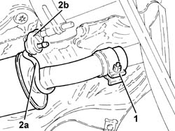
Applies to: engines: 2.0 TS; all production periods; only with equipment: Cambio robotizzato
1. Undo the bolt fixing the intermediate silencer flexible mounting bracket.
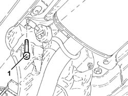
Applies to: engines: 2.0 TS; all production periods; only with equipment: Cambio robotizzato
1. Undo the nuts fixing the catalytic converter to the catalytic pre-converter.
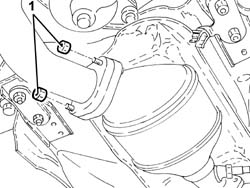
Applies to: engines: 2.0 TS; all production periods; only with equipment: Cambio robotizzato
1. Undo the bolts fixing the catalytic converter flexible mounting brackets.
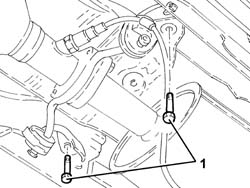
Applies to: engines: 2.0 TS; all production periods; only with equipment: Cambio robotizzato
1. Remove the catalytic converter (1a) and intermediate silencers (1b) assembly.
Remove the gasket.
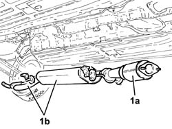
Applies to: engines: 2.0 TS; all production periods; only with equipment: Cambio robotizzato
1. Undo the bolt (1a) and the nuts (1b) and remove the exhaust pipe heat shield (1c).
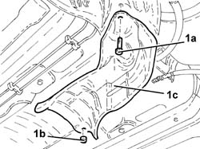
Applies to: engines: 2.0 TS; all production periods; only with equipment: Cambio robotizzato
1. Disconnect the handbarke cables from the bracket.
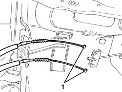
Applies to: engines: 2.0 TS; all production periods; only with equipment: Cambio robotizzato
1. Position a hydraulic jack under the mounting for the electro-hydraulic selection gear lever and the handbrake.
2. Undo the bolts (2a) and nuts (2b) securing the electro-hydraulic gear lever support and handbrake to the bodyshell.
3. Recover the plates.
4. Lower the hydraulic jack as necessary and remove the exhaust pipe side heat shields.
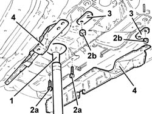
Applies to: engines: 2.0 TS; all production periods; only with equipment: Cambio robotizzato
1. Completely lower the hydraulic jack and remove the electro-hydraulic selection gear lever support and handbrake.
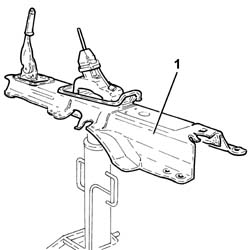
Applies to: engines: 2.0 TS; all production periods; only with equipment: Cambio robotizzato
1. At the bench, undo the nuts (1a) and remove the electro-hydraulic selection manual gear lever (1b) complete with support (1c).
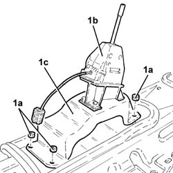
Applies to: engines: 2.0 TS; all production periods; only with equipment: Cambio robotizzato
1. Undo the bolts (1a) and separate the electro-hydraulic selection manual gearbox lever (1b) from the support (1c).
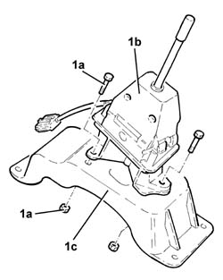
Applies to: engines: 2.0 TS; all production periods; only with equipment: Cambio robotizzato
1. Undo the bolts (1a) and remove the handbrake lever assembly (1b).
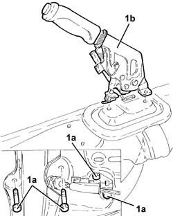
Applies to: engines: 2.0 TS; all production periods; only with equipment: Cambio robotizzato
Refitting
RemovingPlace the handbrake lever assembly back on the support and secure it using the bolts.
Assemble the electro-hydraulic selection manual gear lever and the support and fasten them using the bolts.
Place the electro-hydraulic selection manual gear lever support back in its housing and secure it using the nuts.
Place the electro-hydraulic selection gear lever mounting and handbrake back in its housing using the hydraulic jack.
Place the exhaust pipe side heat shields back in their housings.
Tighten the bolts and the nuts, complete with plates, fixing the electro-hydraulic selection gear lever and handbrake mounting.
Remove the hydraulic jack from underneath the electro-hydraulic selection gear lever and handbrake support.
Connect the handbrake cables to the bracket.
Place the exhaust pipe heat shield back in its housing and secure it using the nuts and the bolt.
Place the catalytic converter, complete with intermediate silencers and gasket, back in its housing.
Tighten the bolts fixing the catalytic converter flexible mounting brackets.
1. Tighten the nuts fixing the catalytic converter to the catalytic pre-converter to the recommended torque.
 | Fastening | Component | Ø | Value (daNm) |
|---|---|---|---|---|
1 | Nut | CATALYTIC CONVERTER (ONE) | M8 | (Pre-catalyzer side) 2.7 ÷ 3.3 |
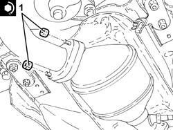
Applies to: engines: 2.0 TS; all production periods; only with equipment: Cambio robotizzato
Tighten the bolt fixing the intermediate silencer flexible mounting bracket.
Secure the intermediate silencer to the flexible mounting.
Tighten the collar fixing the intermediate silencer to the rear silencer.
Secure the electrical wiring for the Lambda sensor to the fastenings on the underbody.
Connect the electrical connection for the Lambda sensor.
Connect the electrical connection to the handbrake switch.
Adjust the travel of the handbrake lever 3380A04 handbrake - check travel .
Place the handbrake boot back in its housing.
Place the rubber protection for the electro-hydraulic selection gear lever back in its housing.
Connect the electrical conection for the electro-hydraulic selection manual gear lever.
Proceed with the refitting 7040A65 passenger compartment box lock , one , r r .
Proceed with the refitting 2127A20 cover of control lever/handle for manual gearbox with hydraulic selection - r r .
Connect the battery terminal (-).
Remove the car from the ramp.
Applies to: engines: 3.2 V6; all production periods; only with equipment: Cambio robotizzato
Removing
RefittingEnsure that the ignition key is in the OFF position, then disconnect the negative battery terminal (-).
| Name | Connector |
|---|---|---|
- | Battery |
Proceed with the removal 7040A65 passenger compartment box lock , one , r r (Left and right sides).
Proceed with removal - 7040L37 gear lever plate - r r .
Proceed with removal 7065C42 ashtray (one) r+r .
Proceed with removal 7040L20 tunnel trim - r r .
1. Disconnect the electrical connection for the electro-hydraulic selection manual gear lever.
| Name | Connector |
|---|---|---|
1 | Gear controls |
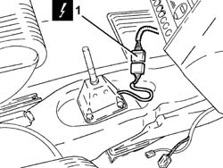
Applies to: engines: 3.2 V6; all production periods; only with equipment: Cambio robotizzato
1. Undo the bolts (1a) and remove the air supply duct to the rear passengers (1b).
2. Remove the protection

Applies to: engines: 3.2 V6; all production periods; only with equipment: Cambio robotizzato
Undo the handbrake lever adjustment nut.
Disconnect the electrical connection from the handbrake switch.
| Name | Connector |
|---|---|---|
- | Handbrake switch |
Proceed with removal 7055B54 under-engine guard - r r .
Proceed with removal 1076B82 left exhasust pipe between catalytic preconverter and converter r r .
Proceed with removal 1076B84 right exhaust pipe between caralytic preconverter and converter r r .
Proceed with removal 1080B65 catalytic converter assembly r r .
1. Disconnect the intermediate exhaust silencer (1b) from the flexible support (1a).

Applies to: engines: 3.2 V6; all production periods; only with equipment: Cambio robotizzato
1. Remove the retainer (1a) and disconnect the handbrake cables (1b).
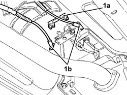
Applies to: engines: 3.2 V6; all production periods; only with equipment: Cambio robotizzato
1. Position a hydraulic jack under the electro-hydraulic selection gear lever support and handbrake.
2. Undo the bolts (2a) and nuts (2b) securing the electro-hydraulic gear lever support and handbrake to the bodyshell.
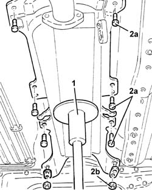
Applies to: engines: 3.2 V6; all production periods; only with equipment: Cambio robotizzato
1. Lower the hydraulic jack and remove the electro-hydraulic selection gear lever support and handbrake in one piece.

Applies to: engines: 3.2 V6; all production periods; only with equipment: Cambio robotizzato
Undo the fixings and remove the handbrake lever complete with linkage.
1. Undo the bolts (1a) and remove the electro-hydraulic selection manual gear lever (1b).
2. Remove the spacer.
3. Undo the nuts (3a) and remove the electro-hydraulic selection manual gear lever support (3b).
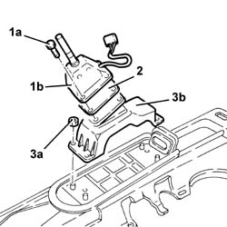
Applies to: engines: 3.2 V6; all production periods; only with equipment: Cambio robotizzato
Refitting
RemovingPlace the electro-hydraulic selection manual gear lever support back in its housing and secure it using the nuts.
Place the spacer back in its housing.
Place the electro-hydraulic selection manual gear lever back in its housing and fix it using the bolts.
Place the handbrake lever, complete with linkage, back in its housing and secure it.
Place the electro-hydraulic selection gear lever support and handbrake back in its housing using a hydraulic jack.
Tighten the nuts and bolts securing the electro-hydraulic selection gear lever support and handbrake to the bodyshell.
Remove the hydraulic jack from underneath the electro-hydraulic selection gear lever and handbrake support.
Connect the handbrake cables and secure them using the retainer.
Connect the intermediate exhaust silencer to the flexible support.
.Proceed with refitting 1080B65 catalytic converter assembly r r .
.Proceed with refitting 1076B84 right exhaust pipe between caralytic preconverter and converter r r .
.Proceed with refitting 1076B82 left exhasust pipe between catalytic preconverter and converter r r .
.Proceed with refitting 7055B54 under-engine guard - r r .
Connect the electrical connection to the handbrake switch.
.Proceed with refitting 3380A04 handbrake - check travel .
Refit the protection.
Place the air supply duct to the rear passengers back in its housing and fasten it using the bolts.
Connect the electrical connection for the electro-hydraulic selection manual gear lever.
Proceed with refitting. 7040L20 tunnel trim - r r
.Proceed with refitting 7065C42 ashtray (one) r+r .
.Proceed with refitting - 7040L37 gear lever plate - r r .
Proceed with the refitting 7040A65 passenger compartment box lock , one , r r (Left and right side).
Topics linked from this page (13)
- 1076B82 left exhasust pipe between catalytic preconverter and converter r r
- 1076B84 right exhaust pipe between caralytic preconverter and converter r r
- 1080B65 catalytic converter assembly r r
- 2127A20 cover of control lever/handle for manual gearbox with hydraulic selection - r r
- 3380A04 handbrake - check travel
- 7040A65 passenger compartment box lock , one , r r
- 7040L20 tunnel trim - r r
- 7055B54 under-engine guard - r r
- 7065C42 ashtray (one) r+r
- A1B Battery ( Connectors )
- H37 Gear controls
- I40 Handbrake switch
- K17 Lambda sensor downstream of post-catalyzer